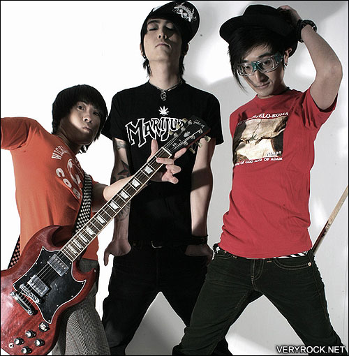

电声乐队指由电子乐器为主组成的乐队。电子乐器指运用电子元件产生和修饰音响的乐器。包括一般电子乐器和电子音响合成器。目前比较多见的电声乐队有以下两类：一、主要由架子鼓、电吉他、电贝司和电子合成器组成。有时还加一个电子钢琴。二、以电声乐队为基础，或者加进铜管乐，或者加进弦乐器，或者加进民族乐曲。近年来电声乐队的发展、变化很快，新的乐器和演奏形式不断涌现。
大约在本世纪 30年代，早在 1938年，美国的一些音乐家就试图开发半电声乐器电子小提琴与电子大提琴。本世纪60年代，电吉他在美国的摇滚乐队和世界上其他国家的通俗音乐乐队中应用，并逐渐有电贝司，电子琴，合成器和架子鼓，一起形成电声乐队。
电声乐队的编制，一般分为基本乐器和色彩乐器。基本乐器包括电吉他、电贝司、电子琴和电子合成器等乐器；色彩乐器包括扩增的小提琴、单簧管、萨克斯管、小号、长号以及民族乐器等。这大概是为了突出轻便的特点，所以我们在为电声乐队写总谱时，从声部的处理上来讲，应该高音乐器演奏旋律声部，低音乐器演奏低音声部，中音声部一般由电子琴或钢琴来填充。架子鼓基本上是通篇演奏，但写谱时一定给它留出空隙，便于它即兴发挥。
在考虑电声乐队的演奏节奏时，一定要注意一般情况和特殊情况。一般通俗音乐的乐队配器，节奏较一致，好像钢琴变奏曲中，某一变奏的钢琴音型一般，以一小节为单位的模式音型，通篇演奏，这属于一般情况。另外从通俗音乐作品本身节奏来看，是变化多端，丰富多彩的，有些甚至比起严肃音乐的节奏还要复杂，比如美国摇滚乐的布鲁斯节奏和拉格泰姆节奏的应用，对电声乐队尤其是架子鼓的演奏要求是非常讲究的，比如在4/4拍中，往往把乐队的重音演奏放在第二拍和第四拍上奏，和4/4拍的常规强、弱、次强、弱的有规律循环，故意造成矛盾，形成一种轻重颠倒，摇摆不定的效果，这种特殊情况我们在写总谱时一定要给予注意。
复调技术在电声乐队里的应用是一个常见的现象，尤其是在为通俗歌曲伴奏时，乐队里低音乐器演奏节奏，高音乐器演奏对位声部，而声乐演员唱主旋律，三者以声部交响的方式来完成作品的表现，可以获得非常好的效果，另外，有时全体电声乐队演奏音型，而声乐演员可充分发挥和表现，以增大通俗歌曲表现的自由度。 |